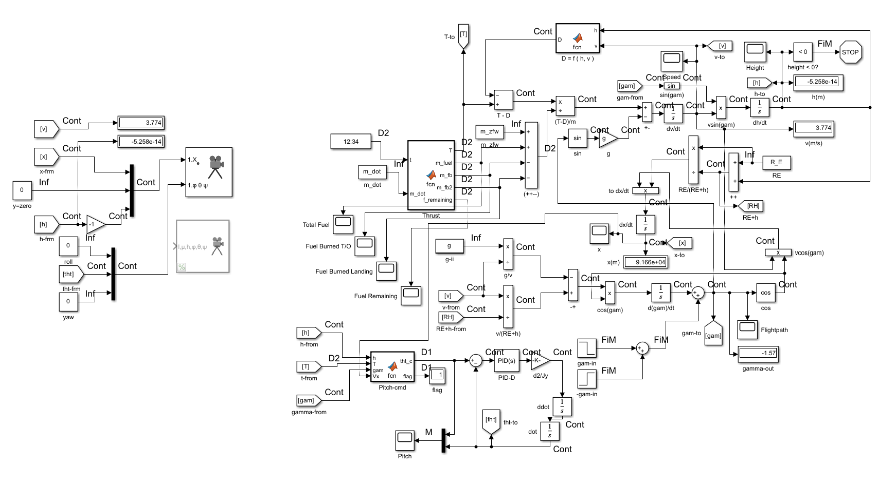

Background
As I set out to learn MATLAB & Simulink, I decided to model a rocket's trajectory and landing sequence. As a beginner in MATLAB, I'll readily admit that I relied heavily on Mathworks' MATLAB tutorials, YouTube videos (Big thanks to VDEngineering), and various generative AI models to learn how to make this happen. I like to use generative AI as a virtual tutor, or a lifeline whenever I get stuck. This project was originally meant to be just for fun, but an assignment in my U of AZ program required that I build a simple web page presenting a recent project. Thus, this HTML based presentation was born. Thanks for checking it out!
About This Simulation
This MATLAB & Simulink simulation models the flight cycle of a rocket, using physics-based equations and control algorithms. The trajectory is dynamically adjusted based on thrust, drag, and pitch control.
How the Rocket’s Trajectory is Modeled
The rocket’s motion follows kinematic equations, using trigonometry to break down velocity into components:
- Horizontal Velocity (
Vx) – Controlled by cosine of the flight angle. - Vertical Velocity (
Vz) – Controlled by sine of the flight angle. - Trajectory Adjustment – The flight path angle (
γ) changes dynamically based on thrust and pitch commands.
Rocket Model
Simulation Video
Key Stats for This Simulation Instance
- Max Altitude: ~32,000 meters (~104,987 feet)
- Max Velocity: ~960 m/sec (~1,850 kts or ~2,129 mph)
- Landing Velocity: ~3.774 m/s (~12.382 ft/s or ~8.442 mph)
- Downrange Distance: ~91,660 m (91.66 km or 56.955 miles)
- The graph for downrange distance demonstrates the horizontal stabilization of the rocket upon approach for landing
Key MATLAB Functions
Thrust Function (T)
The thrust function dynamically adjusts power based on altitude and velocity, ensuring smooth takeoff and controlled descent.
function [T, m_fuel, m_fb, m_fb2, f_remaining] = fcn(t, m_dot)
% Computes thrust and fuel consumption.
%
% Inputs:
% t - Time (s)
% m_dot - Fuel burn rate (kg/s)
%
% Outputs:
% T - Thrust (N)
% m_fuel - Total available fuel (kg)
% m_fb - Fuel burned during takeoff (kg)
% m_fb2 - Fuel burned during landing (kg)
persistent mfb mfb2
if isempty(mfb)
mfb = 0;
end
if isempty(mfb2)
mfb2 = 0;
end
mfuel = 21491.26; % Total fuel mass
T_takeoff = 346961.2; % Adjust as needed
T_landing = -112407; % Adjust to control descent rate
% Use 65% of fuel at max thrust during T/O
if mfb <= 0.65 * mfuel
THR = T_takeoff; % Max T/O thrust (N)
mfb = t * m_dot;
else
THR = 0; % No thrust after T/O fuel limit reached
end
% Use remaining 35% of fuel for landing
if (130 < t) && (t < 300) % Landing phase 125 s < t < 295 s
T = T_landing; % Negative thrust to decelerate for landing
mfb2 = (t - 130) * (m_dot / 3);
end
T = THR; % Thrust (N)
m_fb = mfb; % Fuel burned on T/O (kg)
m_fb2 = mfb2; % Fuel burned on landing (kg)
m_fuel = mfuel; % Total available fuel (kg)
f_remaining = m_fuel - ( mfb + mfb2 ); % Fuel qty calculation
Drag Function (D)
The drag function calculates atmospheric resistance based on the International Standard Atmosphere (ISA) model.
function D = fcn(h, v)
% Computes aerodynamic drag force.
%
% Inputs:
% h - Altitude (m)
% v - Velocity (m/s)
%
% Output:
% D - Drag force (N)
CD = 0.075; % Drag Coefficient
Di = 1.5; % Object diameter (m)
A = pi * (Di^2) / 4; % Cross-sectional area
% ISA density model
if h <= 11000 % Troposphere (0 - 11000 m)
T = 15.04 - 0.00649 * h; % Temperature (°C)
p = 101.29 * ((T + 273.1) / 288.08)^5.258; % Pressure (kPa)
elseif h <= 25000 % Lower Stratosphere ( 11000 - 25000 m)
T = -56.46;
p = 22.65 * exp(1.73 - 0.000157 * h);
else % Upper Stratosphere ( > 25000 m)
T = -131.21 + 0.00299 * h;
p = 2.488 * ((T + 273.1) / 216.6)^-11.388;
end
rho = p / (0.2869 * (T + 273.1)); % Density (kg/m³)
% Drag force D
D = 0.5 * rho * v^2 * A * CD;
Pitch Control (tht_c)
The pitch control function adjusts the rocket’s angle dynamically to maintain a stable descent.
function [tht_c, flag] = fcn(h, T, gam, Vx)
% Controls the descent trajectory and landing alignment.
%
% Inputs:
% h - Altitude (m)
% T - Thrust (N)
% gam - Flight path angle (radians)
% Vx - Horizontal velocity (m/s)
%
% Outputs:
% tht_c - Desired pitch angle (radians)
% flag - Flight phase indicator
persistent f
if isempty(f)
f = 0; % Default state (ascent phase)
end
% Define descent phase thresholds
h_burn = 1000; % Start landing burn at 1000m
h_hover = 200; % Start hover before final vertical alignment
vx_threshold = 1;
if T <= 0
t_c = gam + pi; % Flip to retrograde for controlled descent
if t_c > pi
t_c = pi;
end
f = 1; % Set landing flag
elseif h <= h_burn && h > h_hover
if abs(Vx) > vx_threshold
t_c = gam + pi; % Keep retrograde until lateral movement is minimal
else
t_c = pi/3; % Hold an intermediate angle (~60°) before going full vertical
end
f = 2;
elseif h <= h_hover
t_c = pi/2; % Fully vertical for touchdown
else
t_c = gam; % Maintain normal flight path
f = 0;
end
flag = f;
tht_c = t_c;
How These Functions Work Together
By combining thrust (T), drag (D), and pitch control (tht_c), the rocket follows a realistic trajectory:
- During ascent, thrust counteracts gravity and drag, propelling the rocket skyward.
- During initial descent, thrust is cut, drag slows the rocket, and pitch control ensures a stable approach.
- During the final landing phase, thrust is applied in reverse to slow down, and pitch control aligns the rocket vertically.
- Horizontal velocity is reduced to avoid sliding or tipping upon landing.
- Vertical velocity is reduced to a safe value to prevent a hard landing.
Potential Improvements and Future Projects
Improvements:
- I was unable to debug a small hitch in the pitch angle briefly after liftoff, it seems mostly benign but in a finished product I'd like to see it eliminated.
- More dynamic and smoothed control of the rocket's pitch and thrust would be desirable. In the simulation's current configuration, I had to vary the landing thrust output manually before each instance to adjust the vertical landing velocity. I'd like to implement dynamic throttling in future iterations based on feedback-looped inputs of velocity and altitude.
- I hoped to model this simulation in FlightGear, but I was unable to make it work. I'd like to figure out how to create more polished simulation visualizations beyond the standard tools of Simulink.
Future Projects:
- I have experimented with MATLAB/Simulink in modelling aircraft systems such as propulsion, flight control, guidance, and navigation. I would like to put together presentations on these models as well in the near future. I have a fair bit more knowledge in aircraft systems than I do rocket trajectory, so these models I expect to be a bit more thorough.
- I would like to move into 6DOF simulations as well. Modelling something like a UAV's autolanding sequence would be of interest to me.
As an avionics technician, I have always been driven by a deep curiosity about the inner workings of every component I work on. My formal and hands-on training provided me with a strong grasp of system integration—understanding what each component does and how they interact within larger systems. However, as the complexity of these interactions became more apparent, I found myself eager to delve even deeper into the mechanics behind the “hows.” Fortunately, my studies in applied computing have enabled me to bridge this gap. I now possess the knowledge to comprehend systems from the fundamental level of binary data all the way to their tangible, physical outputs. This comprehensive understanding not only enriches my technical expertise but also further fuels my continuous pursuit of answering "hows". This is my driving force in creating these projects. My goal is to continue learning in hopes that I can become a strong contributor in the industry and pursue boundless innovation in aerospace.
View My GitHub